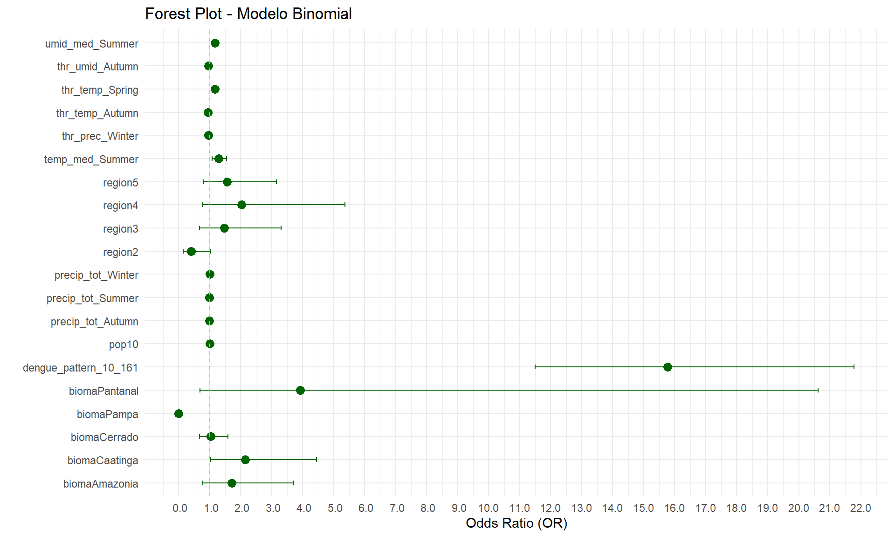

Juntando os bancos de cada período para as modelagens dos períodos.
As variavéis altitude(p-valor = 0,314), thr_umid_spring(p-valor = 0,911) e thr_umid_temp_Autumn (p-valor = 0,459) não demonstraram uma relação significativa com a transmissão da dengue, o que sugere que não há evidências suficientes para incluí-la no modelo, levando à sua remoção da análise.
#Excluido as variáveis que não serão utilizadasbanco_determinantes <- banco_determinantes[,!(names(banco_determinantes) %in%c("...1","altitude"))]clima_org_model_17_22_season <- clima_org_model_17_22_season[,!(names(clima_org_model_17_22_season) %in%c("...1", "dengue_pattern","thr_umid_Spring","thr_temp_umid_Autumn" ))]# Renomeia a nova primeira colunacolnames(clima_org_model_17_22_season)[1] <-"muni_code"# Juntandodet_17_22 <-full_join(banco_determinantes, clima_org_model_17_22_season , by ="muni_code")det_17_22 <- det_17_22[, !names(det_17_22) %in%c("pop22")]## Removendo os bancos para a nálise ficar mais leveremove(banco_determinantes)remove(clima_org_model_17_22_season)colSums(is.na(det_17_22))
Análise do período de 2017-2022, primeira parte de uma série temporal da classificação de padrões de transmissão de todos os municípios brasileiros para dengue.
1. Arrumando variáveis
# Converter variáveis numéricas com vírgula decimal e categorizar as variáveis de textodet_17_22 <- det_17_22 %>%mutate(across(where(~all(grepl("^[0-9,.]+$", .))), ~as.numeric(gsub(",", ".", .))),across(where(is.character), as.factor))det_17_22$dengue_pattern_17_22 <-as.factor(det_17_22$dengue_pattern_17_22)det_17_22$dengue_pattern_10_16 <-as.factor(det_17_22$dengue_pattern_10_16)# Visão geral dos dadossummary(det_17_22)
muni_code region tipo_regiao koppen
Min. :1100015 Min. :1.000 metropolitana : 445 Aw :1337
1st Qu.:2512126 1st Qu.:2.000 nao metropolitana:5125 Cfa :1138
Median :3146280 Median :3.000 As : 892
Mean :3253591 Mean :2.898 BSh : 420
3rd Qu.:4119190 3rd Qu.:4.000 Cwa : 407
Max. :5300108 Max. :5.000 Cfb : 405
(Other): 971
pop10 prop_residuo prop_esgot bioma
Min. : 805 Min. : 0.00 Min. : 0.00 Amazonia : 503
1st Qu.: 5235 1st Qu.: 54.33 1st Qu.: 12.85 Caatinga :1095
Median : 10934 Median : 74.08 Median : 38.03 Cerrado :1062
Mean : 34278 Mean : 70.21 Mean : 42.27 Mata Atlantica:2741
3rd Qu.: 23424 3rd Qu.: 89.22 3rd Qu.: 70.44 Pampa : 160
Max. :11253503 Max. :100.00 Max. :100.00 Pantanal : 9
NA's :5
dengue_pattern_10_16 dengue_pattern_17_22 temp_med_Autumn umid_med_Autumn
0:4915 0:4812 Min. :13.31 Min. :55.97
1: 655 1: 758 1st Qu.:19.60 1st Qu.:69.82
Median :22.82 Median :76.33
Mean :22.26 Mean :75.44
3rd Qu.:25.21 3rd Qu.:80.94
Max. :27.54 Max. :91.30
NA's :3 NA's :3
precip_tot_Autumn thr_temp_Autumn thr_umid_Autumn thr_prec_Autumn
Min. : 0.0 Min. : 0.00 Min. : 0.00 Min. : 0.00
1st Qu.: 547.0 1st Qu.:42.88 1st Qu.:77.00 1st Qu.:13.17
Median : 937.8 Median :83.00 Median :89.00 Median :21.50
Mean :1132.1 Mean :68.07 Mean :81.99 Mean :25.03
3rd Qu.:1476.3 3rd Qu.:92.00 3rd Qu.:91.50 3rd Qu.:30.00
Max. :6371.6 Max. :92.00 Max. :92.00 Max. :87.67
temp_med_Spring umid_med_Spring precip_tot_Spring thr_temp_Spring
Min. :15.51 Min. :44.44 Min. : 0.0 Min. : 0.00
1st Qu.:21.99 1st Qu.:65.81 1st Qu.: 824.2 1st Qu.:72.67
Median :24.86 Median :71.05 Median :1549.0 Median :90.00
Mean :24.38 Mean :70.28 Mean :1364.3 Mean :78.98
3rd Qu.:26.72 3rd Qu.:76.48 3rd Qu.:1850.6 3rd Qu.:91.00
Max. :31.08 Max. :89.49 Max. :3225.9 Max. :91.00
NA's :3 NA's :3
thr_prec_Spring thr_temp_umid_Spring temp_med_Summer umid_med_Summer
Min. : 0.00 Min. : 0.00 Min. :18.20 Min. :57.99
1st Qu.:19.67 1st Qu.:46.00 1st Qu.:23.48 1st Qu.:73.76
Median :31.42 Median :60.33 Median :25.01 Median :77.34
Mean :29.11 Mean :59.21 Mean :24.67 Mean :76.98
3rd Qu.:38.83 3rd Qu.:76.00 3rd Qu.:25.97 3rd Qu.:80.88
Max. :79.50 Max. :91.00 Max. :28.75 Max. :91.18
NA's :3 NA's :3
precip_tot_Summer thr_temp_Summer thr_umid_Summer thr_prec_Summer
Min. : 0 Min. : 0.00 Min. : 0.00 Min. : 0.00
1st Qu.:1308 1st Qu.:88.67 1st Qu.:82.00 1st Qu.:30.00
Median :1846 Median :90.17 Median :87.83 Median :40.92
Mean :1934 Mean :87.02 Mean :83.41 Mean :42.17
3rd Qu.:2449 3rd Qu.:90.17 3rd Qu.:90.00 3rd Qu.:52.17
Max. :6139 Max. :90.17 Max. :90.17 Max. :89.33
thr_temp_umid_Summer temp_med_Winter umid_med_Winter precip_tot_Winter
Min. : 0.00 Min. :11.63 Min. :37.88 Min. : 0.0
1st Qu.:76.17 1st Qu.:18.50 1st Qu.:53.73 1st Qu.: 106.1
Median :85.00 Median :21.97 Median :67.49 Median : 305.2
Mean :80.38 Mean :21.71 Mean :65.47 Mean : 549.2
3rd Qu.:89.67 3rd Qu.:25.19 3rd Qu.:77.42 3rd Qu.: 874.3
Max. :90.17 Max. :29.80 Max. :89.34 Max. :3263.7
NA's :3 NA's :3
thr_temp_Winter thr_umid_Winter thr_prec_Winter thr_temp_umid_Winter
Min. : 0.00 Min. : 0.00 Min. : 0.000 Min. : 0.000
1st Qu.:23.21 1st Qu.:22.00 1st Qu.: 2.167 1st Qu.: 6.333
Median :76.83 Median :74.17 Median : 7.000 Median :14.000
Mean :60.58 Mean :58.78 Mean :12.092 Mean :30.753
3rd Qu.:92.00 3rd Qu.:90.67 3rd Qu.:20.500 3rd Qu.:52.667
Max. :92.00 Max. :92.00 Max. :78.667 Max. :92.000
2. Verificação dos pressupostos
1. Verificação de valores ausentes (NA)
Valores ausentes podem comprometer a análise, pois a regressão binomial não lida bem com dados incompletos. Se houver muitas ausências em uma variável, pode ser necessário removê-la ou imputar valores. Caso haja poucos valores faltantes, a remoção de linhas (na.omit()) pode ser suficiente. A ausência de NA indica que o banco está pronto para a modelagem.
Interpretação: Foram retiradas 8 linhas ou seja 8 municípios, são eles: xxxxxxxx
2. Análise de multicolinearidade com VIF
A multicolinearidade ocorre quando variáveis independentes estão altamente correlacionadas, dificultando a interpretação do modelo. O VIF (Variance Inflation Factor) mede essa relação: valores acima de 5 indicam uma correlação preocupante, e acima de 10 exigem ajustes, como exclusão ou transformação de variáveis.
Interpretação: Existiam 12 variáveis com VIF igual ou acima de 10, que foram retidas da análise por multicolineridade. Presentes na tabela vif_binomial_model_17_22.csv.
3. Verificação de outliers nos resíduos padronizados
Outliers podem distorcer os coeficientes da regressão binomial e afetar a qualidade da predição. A análise dos resíduos padronizados permite identificar observações extremas, geralmente consideradas problemáticas quando estão fora do intervalo de -3 a 3. Se houver muitos outliers, pode ser necessário revisar a entrada de dados ou aplicar transformações.
Interpretação: Foram retiradas 9 linhas ou seja 9 municípios com 4 de categoria 0 e 5 de categoria 1. Todos com intervalos acima de -3 e 3. Presentes na tabela outliers_binomial_model_17_22.csv.
# 1. Verificação de valores ausentescat("Valores ausentes por variável:\n")
Valores ausentes por variável:
#print(colSums(is.na(det_17_22)))# Remover linhas com NA (se necessário)det_17_22 <-na.omit(det_17_22)# modelo geral sem categoria de referênciabinomial_model <-glm(dengue_pattern_17_22 ~ ., data = det_17_22 , family = binomial)
Warning: glm.fit: probabilidades ajustadas numericamente 0 ou 1 ocorreu
# 2. Verificação de Multicolinearidade (VIF) # VIF só pode ser calculado em variáveis numéricas, então convertemos as categóricas para dummies# Calcular os valores de VIFvif_values <-vif(binomial_model) # Converter VIF para um dataframe, extraindo a coluna corretavif_df <-as.data.frame(vif_values)colnames(vif_df) <-c("GVIF", "Df", "GVIF_ajustado")# Exibir os valores de VIF ajustadoscat("\nValores de VIF ajustados:\n")
# Criar um dataframe com variáveis que possuem VIF ≥ 10high_vif_vars <-rownames(vif_df[vif_df$GVIF_ajustado >=10, ])# Salvar as variáveis com alto VIF em um arquivo CSVwrite.csv(data.frame(Variavel = high_vif_vars, VIF_Ajustado = vif_df$GVIF_ajustado[high_vif_vars]), "vif_binomial_model_17_22.csv", row.names =FALSE)# Remover variáveis com VIF ≥ 10 do banco de dadosdet_17_22 <- det_17_22[, !(names(det_17_22) %in% high_vif_vars)]# Exibir as colunas restantes no banco de dados atualizadocat("\nColunas restantes após remoção de variáveis com alto VIF:\n")
Colunas restantes após remoção de variáveis com alto VIF:
# 3. Verificação de Outliers com Resíduos Padronizados# Criar uma coluna de resíduos padronizadosdet_17_22$residuos <-rstandard(binomial_model)# Filtrar apenas os outliers (resíduos <= -3 ou >= 3)outliers <- det_17_22 %>%filter(residuos <=-3| residuos >=3)# Verificar o novo banco de dados com os outliersprint(outliers)
# Salvando bancowrite.csv(outliers, "outliers_binomial_model_17_22.csv", row.names =FALSE)# Removendo as observações que eram outliers (≤ -3 ou ≥ 3).det_17_22<- det_17_22 %>%filter(residuos >-3& residuos <3)#Visualizationggplot(det_17_22 , aes(x =1:nrow(det_17_22), y = residuos)) +geom_point() +geom_hline(yintercept =c(-3, 3), linetype ="dashed", color ="red") +labs(title ="Verificação de Outliers", x ="Índice", y ="Resíduos Padronizados")
Para cada categoria (em relação à referência “0”), o modelo estima coeficientes (Coefficients) para cada variável preditora. Esses coeficientes representam o efeito de cada variável sobre a probabilidade de estar nas categorias 1, em comparação com 0.
# Remover colunas pelo nomedet_17_22 <- det_17_22[, !names(det_17_22) %in%c("muni_code")]det_17_22$region <-as.factor(det_17_22$region)# removendo as linhas com Nadet_17_22 <- det_17_22%>%filter(!if_any(where(is.numeric), is.na))# Definir a categoria de referência para todas as variáveis categóricasdet_17_22$dengue_pattern_17_22 <-relevel(det_17_22$dengue_pattern_17_22, ref ="0") # variável dependente# Variáveis independentesdet_17_22$bioma <-relevel(det_17_22$bioma, ref ="Mata Atlantica")det_17_22$tipo_regiao <-relevel(det_17_22$tipo_regiao , ref ="nao metropolitana")det_17_22$dengue_pattern_10_16 <-relevel(det_17_22$dengue_pattern_10_16, ref ="0")det_17_22$koppen <-relevel(det_17_22$koppen, ref ="Aw")# Modelo com tudo# excluindo os resídosdet_17_22$residuos<-NULLbinomial_model <-glm(dengue_pattern_17_22 ~ ., data = det_17_22, family = binomial)
Warning: glm.fit: probabilidades ajustadas numericamente 0 ou 1 ocorreu
O stepwise é um método automatizado de seleção de variáveis em modelos estatísticos, que adiciona ou remove preditores com base em critérios como o AIC (Akaike Information Criterion). Ele busca um equilíbrio entre ajuste e simplicidade do modelo, evitando a inclusão de variáveis irrelevantes. Na regressão binomial, interpreta-se o modelo final pelos coeficientes das variáveis selecionadas, que indicam a influência de cada preditor na probabilidade do evento analisado, além do AIC, que avalia a qualidade do ajuste.
# Criar o modelo inicial (nulo com region e pop10)null_model <-glm(dengue_pattern_17_22 ~ region + pop10, data = det_17_22, family = binomial)# Criar o modelo completo (com todas as variáveis preditoras adicionais)full_formula <-as.formula(paste("dengue_pattern_17_22 ~ region + pop10 +", paste(setdiff(names(det_17_22), c("dengue_pattern_17_22_17_22", "region", "pop10")), collapse =" + ")))full_model <-glm(full_formula, data = det_17_22, family = binomial)# Aplicar a seleção stepwise sem mostrar o processo intermediáriostep_model <-stepAIC(null_model, scope =list(lower = null_model, upper = full_model), direction ="both", trace =FALSE) # <- Isso esconde as iterações# Exibir apenas o resumo final do modeloprint(summary(step_model))
Pseudo R² (Nagelkerke, McFadden, Cox & Snell) : Mede a proporção da variância explicada pelo modelo.
Valores típicos: McFadden R² > 0.2 → Bom ajuste
Nagelkerke R² > 0.4 → Muito bom ajuste
Teste de Verossimilhança (Likelihood Ratio Test - LRT): Compara um modelo com e sem variáveis explicativas para ver se o modelo ajustado é significativamente melhor do que um modelo nulo. Se o p-valor for baixo (< 0.05), rejeitamos o modelo nulo, indicando que as variáveis explicativas contribuem para a predição.
Teste de Hosmer-Lemeshow : Avalia se as probabilidades previstas pelo modelo são bem ajustadas aos dados observados. Interpretação: p-valor > 0.05 → Indica bom ajuste p-valor < 0.05 → Indica que o modelo pode não estar ajustando bem.
Curva ROC e AUC (Área Sob a Curva) : Mede a capacidade do modelo de discriminar entre as classes (0 e 1).
AUC = 0.5 → Modelo sem discriminação
AUC entre 0.7 e 0.8 → Bom modelo
AUC acima de 0.8 → Excelente modelo
Matriz de Confusão e Acurácia : Avalia o desempenho do modelo na predição correta das classes.
Acurácia = (TP + TN) / (TP + TN + FP + FN)
Resumindo:
Método
Interpretação
Pseudo R² (Nagelkerke, McFadden)
Mede a proporção da variância explicada. Quanto maior, melhor.
LRT (Teste de Verossimilhança)
Verifica se o modelo ajustado é significativamente melhor que um modelo nulo.
Hosmer-Lemeshow
Testa se as previsões do modelo correspondem às observações reais.
Curva ROC e AUC
Mede a capacidade preditiva do modelo (valores > 0.8 indicam ótimo desempenho).
# geral# Extraindo os coeficientes do modelo multinomial com intervalo de confiançatidy_model <- broom::tidy(modelo_final, conf.int =TRUE)# Filtrando apenas os coeficientes das variáveis preditoras (removendo a categoria base)tidy_model <- tidy_model %>%filter(term !="(Intercept)")# Convertendo os coeficientes log-OR para OR e arredondando para 3 casas decimais, sem limitestidy_model <- tidy_model %>%mutate(estimate =round(exp(estimate), 3), # Convertendo log-OR para ORconf.low =round(exp(conf.low), 3), # Convertendo intervalo inferiorconf.high =round(exp(conf.high), 3) # Convertendo intervalo superior )# Definindo os valores do eixo X dinamicamente, sem limite fixox_breaks <-seq(0, max(tidy_model$conf.high, na.rm =TRUE) +1, by =1)x_labels <-format(round(x_breaks, 1), nsmall =1) # Formata com 1 casa decimal# Criando o gráfico de forest plot sem limite artificial no eixo Xggplot(tidy_model, aes(x = estimate, y = term)) +geom_point(color ="darkgreen", size =3) +# Pontos dos ORsgeom_errorbarh(aes(xmin = conf.low, xmax = conf.high), height =0.2, color ="darkgreen") +# Barras de errogeom_vline(xintercept =1, linetype ="dashed", color ="gray") +# Linha vertical em OR = 1scale_x_continuous(breaks = x_breaks,labels = x_labels ) +labs(x ="Odds Ratio (OR)", y ="", title ="Forest Plot - Modelo Binomial") +theme_minimal()

## Com limites de -3 e 3# Extraindo os coeficientes do modelo multinomial com intervalo de confiançatidy_model <- broom::tidy(modelo_final, conf.int =TRUE)# Filtrando apenas os coeficientes das variáveis preditoras (removendo a categoria base)tidy_model <- tidy_model %>%filter(term !="(Intercept)")# Convertendo os coeficientes log-OR para OR e arredondando para 3 casas decimaistidy_model <- tidy_model %>%mutate(estimate =round(pmin(exp(estimate), 3), 3), # Limita os valores acima de 3 para 3conf.low =round(pmax(exp(conf.low), 0), 3), # Garante que conf.low nunca seja menor que 0conf.high =round(pmin(exp(conf.high), 3), 3) # Limita os valores acima de 3 para 3 )# Definindo os valores fixos do eixo Xx_breaks <-c(0, 0.1, 1, 2, 3) # Apenas 1 casa decimalx_labels <-format(round(x_breaks, 1), nsmall =1) # Formata com 1 casa decimal# Criando o gráfico de forest plotggplot(tidy_model, aes(x = estimate, y = term)) +geom_point(color ="darkgreen", size =3) +# Pontos dos ORsgeom_errorbarh(aes(xmin = conf.low, xmax = conf.high), height =0.2, color ="darkgreen") +# Barras de errogeom_vline(xintercept =1, linetype ="dashed", color ="gray") +# Linha vertical em OR = 1scale_x_continuous(breaks = x_breaks,labels = x_labels,limits =c(0, 3) # Limita a escala até 3 ) +labs(x ="Odds Ratio (OR)", y ="", title ="Forest Plot - Modelo Binomial") +theme_minimal()